Content authoring - Maps
CARLA comes with a generous compliment of assets for creating driving simulations out of the box. However, the real power of CARLA comes in its comprehensive extensibility, allowing users to create entirely custom environments populated with bespoke assets like buildings, benches, trash cans, statues, street lights and bus stops.
In this tutorial we will cover the process of creating a simple map for use with CARLA. We will use two software packages to create parts of the map. We will create the road network using RoadRunner and then add assets to the map through the Unreal Editor.
- Prerequisites
- Large maps
- Digital Twin Tool
- RoadRunner
- Importing into CARLA
- Importing assets
- Traffic lights
- Traffic signs
- Materials
- Road painter
- Trees and vegetation
- Exporting a map
Prerequisites
To follow this guide, you will need to build CARLA from source, so that you may use the Unreal Editor. Follow the build instructions for your relevant operating system. You will also need a licensed copy of RoadRunner. You may also need a 3D modelling application such as Maya, 3DS Max or Blender to create 3D assets for your custom maps. You should ensure you have completed all the steps to build CARLA and ensure that the Unreal Editor is working, this could take some time to build the application. If you want to create 3D assets for your map, you should use an appropriate 3D design application such as Blender, Maya, 3DsMax or Modo.
Large Maps
The following text details the procedures for creating and decorating a standard map. From version 0.9.12, CARLA has the Large Maps functionality. Large maps are bigger in scale than standard maps, and can be up to 100 km2 in size. Large maps work in a slightly different way to standard maps, because of hardware limitations, even in high end graphics cards. Large maps are split up into tiles, and only the tiles needed immediately (i.e. those closest to the Ego vehicle) are loaded during the simulation. Other tiles sit dormant until the data is needed. This facilitates the highest performance for CARLA simulations. Most of the details that follow are similar when building a Large Map, but there are some additional steps. Please follow this guide to build a Large Map for CARLA.
Digital Twin Tool
CARLA offers a procedural map generation tool, which ingests road network data from OpenStreetMap and decorates the map procedurally with buildings and vegetation. Read about how to use the tool here.
Create a road network using RoadRunner
Open RoadRunner and create a new scene. Choose the Road Plan Tool and right click in the workspace to drop the first control point for the road. Click and drag elsewhere in the workspace to extend the road.
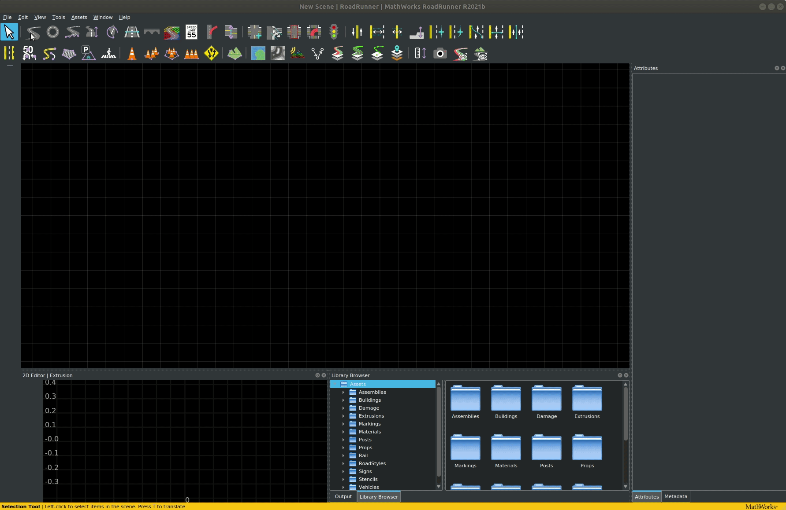
For the purpose of this tutorial we use a simple oval road with a junction in the middle. For building more advanced networks please refer to the roadrunner documentation.
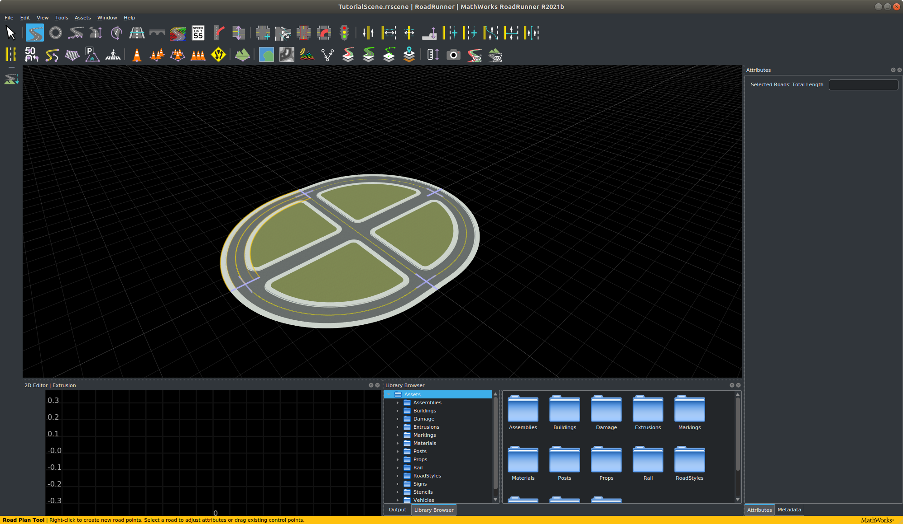
Once you have made your map in RoadRunner you will be able to export it. Be aware that the road layout cannot be modified after it has been exported. Before exporting, ensure that:
- The map is centered at (0,0) to ensure the map can be visualized correctly in Unreal Engine.
- The map definition is correct.
- The map validation is correct, paying close attention to connections and geometries.
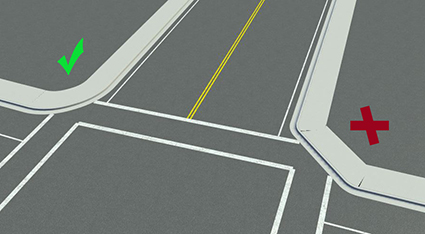
Once the map is ready, click on the OpenDRIVE Preview Tool button to visualize the OpenDRIVE road network and give everything one last check.

Note
OpenDrive Preview Tool makes it easier to test the integrity of the map. If there are any errors with junctions, click on Maneuver Tool, and Rebuild Maneuver Roads.
Once you have created your desired road network, in the RoadRunner menu bar choose File > Export > Carla (.fbx, .xodr, .rrdata, .xml) and export to an appropriate location.
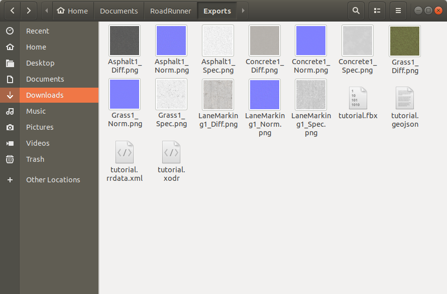
RoadRunner is the best application for creating custom maps. There are alternatives such as OpenStreetMap that focus on generating maps from real road maps.
TrueVision designer
RoadRunner is a proprietary software that requires MATLAB. Some institutions like universities may have deals with MathWorks such that some users may be able to acquire a RoadRunner license. If you don't have budget for a license, a convenient open source alternative to RoadRunner is the TrueVision Designer. This app has many of the same features as RoadRunner and is useful if you cannot acquire a license for RoadRunner.
Importing your road network into CARLA
The important export files needed for CARLA are the .xodr file and the .fbx file. Copy or move these files into the Import folder inside the root directory of the CARLA repository where you have built from source.
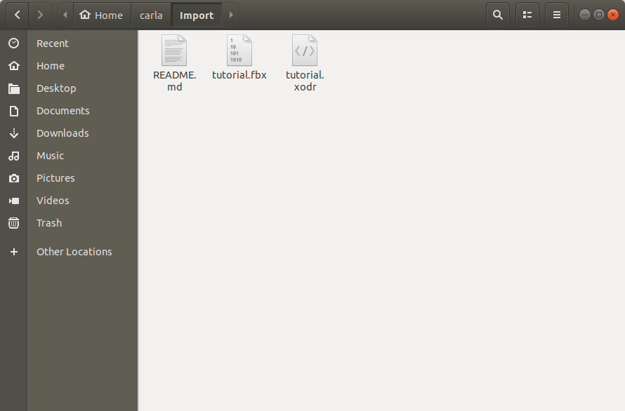
Now open a terminal at the root of the CARLA source directory and run make import. This will import the road network into CARLA.
You can now see your new map inside the Unreal Editor. Run make launch at the root of the CARLA source directory to launch the Unreal Editor. You will now see a new directory in the content browser named map_package. Within this directory in the location Content > map_package > Maps > tutorial you will now find your new map.
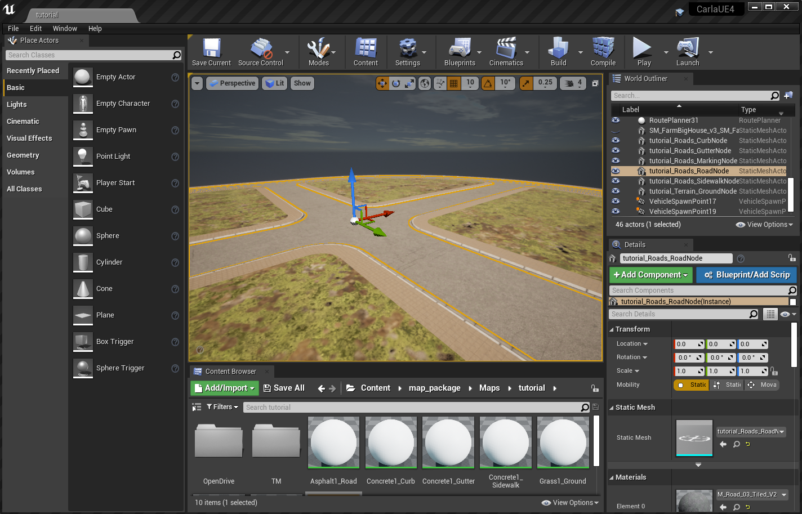
You have now created the road network, the basis of your map.
Importing assets and adding them to the map
Now we have the road network as the basis for our map, we now want to create some content for the map, such as buildings. These assets can be created using a 3D modelling application such as Autodesk Maya, 3DS Max, Blender or any other 3D application with the appropriate export options. It is important that, at a minimum, the application is capable of .fbx export.
There are several elements needed to create an asset in CARLA:
- Mesh - a set of 3D coordinate vertices and the associated joining edges
- UV map - a mapping of 3D vertices and edges to a 2D texture space to match textures with 3D locations
- Texture - a 2D image defining the colors and patterns to appear on the surface of the 3D object
- Normal map - a 2D image defining the directions of the normals on the surface of the object, to add 3D variations to the object's surface
- ORM map - a map defining the regions of metallicity, roughness and ambient occlusion
The ORM map utilizes the channels of a standard RGBA encoded image to encode the map of metallic regions, roughness and ambient occlusion. As we define the map here, the red channel defines the metallic map, the green channel the roughness and the blue channel is the ambient occlusion. These maps (as well as the diffuse and normal maps) can be created using an application such as Adobe Substance 3D painter.
Create a new folder in some appropriate location using the Unreal content browser. Within this folder you can either right click and select Import to PATH/TO/FOLDER near the top of the context menu, or drag and drop files directly into the content browser.
We will import an FBX file containing the base mesh and the UV map, that we have exported from Blender.
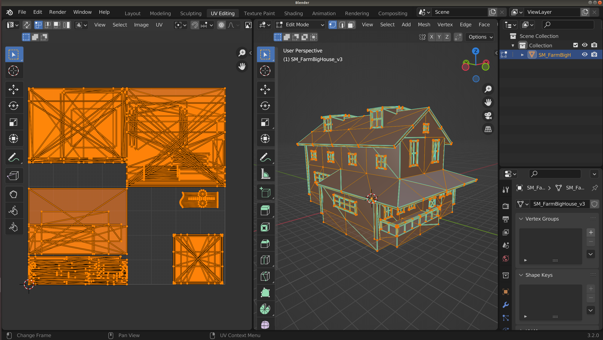
In the context menu, ensure that in the Mesh section Import Normals is selected
for Normal Import Method and that in the Material section that Do Not Create Material is selected. Deselect Import Textures in the Materials section since we will import them manually. These choices would differ if you wanted to use some textures already embedded in your FBX file.
Select Import All. Once the import has completed, double click on the imported asset that appears in the content browser to edit it.
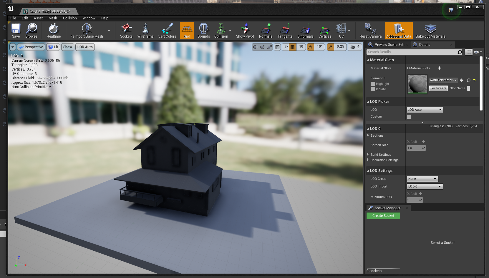
We should now import the textures, the diffuse texture for the diffuse colors, the normal map and the ORM map.
Open the ORM map by double clicking and deselect the sRGB option, to ensure the texture is correctly applied.
Right click in the content browser and select Material from the menu. A new material will be created in the content browser. Double click to edit it. Shift select the textures you imported and drag them into the material edit window, you will now get 3 new nodes in the material node editor.
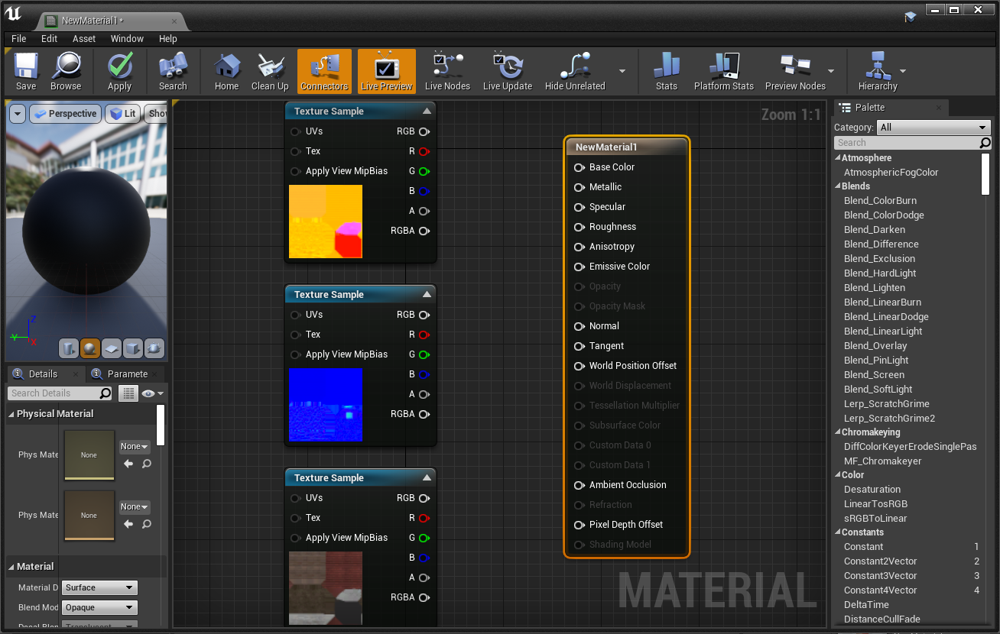
Now connect the nodes according to the following rules:
- Diffuse RGB --> Base Color
- Normal RGB --> Normal
- ORM R --> Ambient occlusion
- ORM G --> Roughness
- ORM B --> Metallic
Your material node graph should now look similar to this:
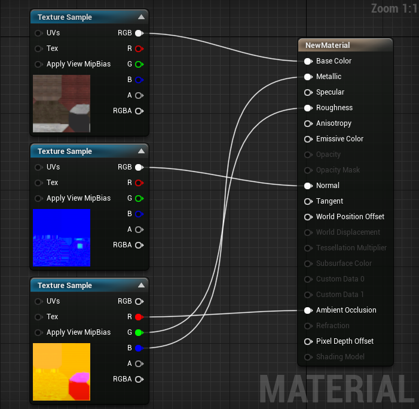
Save the material, then open the asset again and drag the material into the material slot. Your asset should now be fully textured.
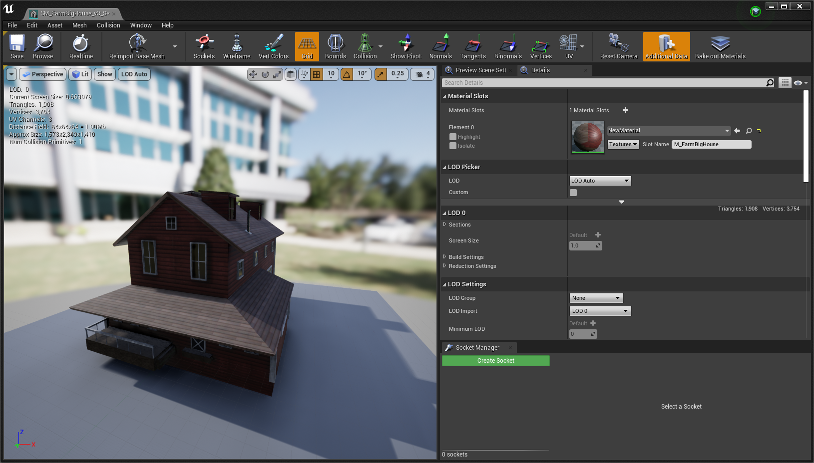
Now save the asset and it is ready for use in your map. You can now drag the asset from the content browser and place it into your map:
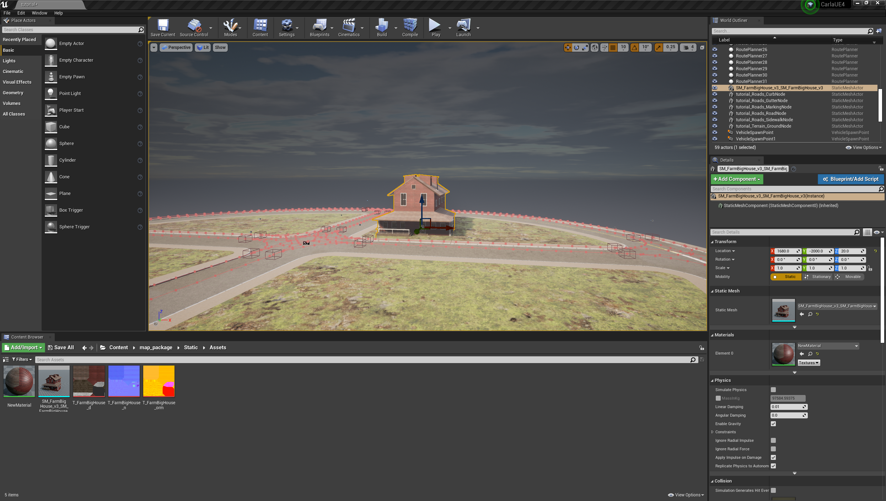
Now you can save the map, using the "Save Current" option in the top left of the workspace and it is ready to use. Play the simulation.
This concludes the Map authorship guide. Now you know how to create a road network and import 3D assets for use in CARLA. You may now read how to package a map for use in CARLA standalone version
Traffic lights
To add traffic lights to your new map:
1. From the Content Browser, navigate to Content > Carla > Static > TrafficLight > StreetLights_01. You will find several different traffic light blueprints to choose from.
2. Drag the traffic lights into the scene and position them in the desired location. Press the space bar on your keyboard to toggle between positioning, rotation, and scaling tools.
3. Adjust the trigger volume for each traffic light by selecting the BoxTrigger component in the Details panel and adjusting the values in the Transform section. This will determine the traffic light's area of influence.
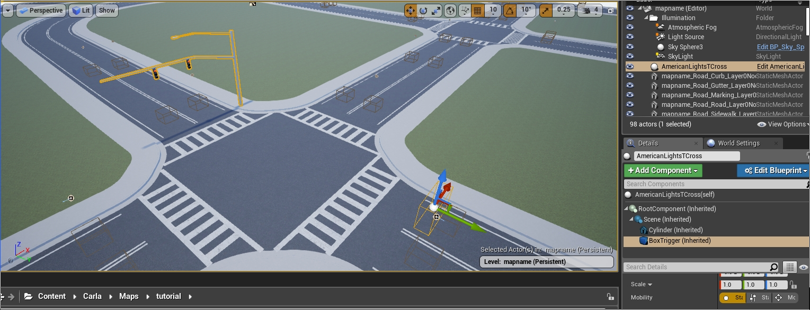
4. For junctions, drag the BP_TrafficLightGroup actor into the level. Assign all the traffic lights in the junction to the traffic light group by adding them to the Traffic Lights array in the Details panel.
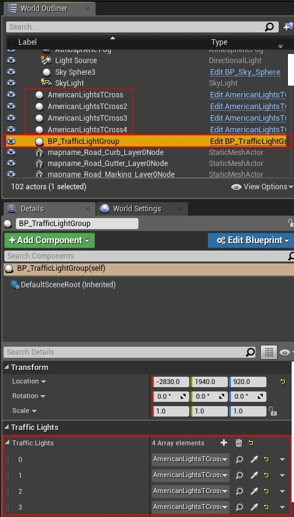
5. Traffic light timing is only configurable through the Python API. See the documentation here for more information.
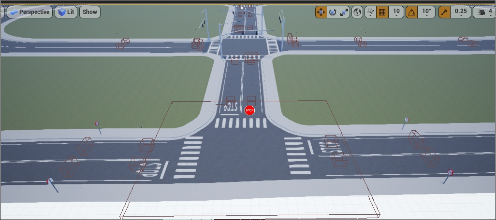
Example: Traffic Signs, Traffic lights and Turn based stop.
Traffic signs
To add traffic signs to your new map:
1. From the Content Browser, navigate to Content > Carla > Static > TrafficSign. You will find several different traffic light blueprints to choose from.
2. Drag the traffic lights into the scene and position them in the desired location. Press the space bar on your keyboard to toggle between positioning, rotation, and scaling tools.
3. Adjust the trigger volume for each traffic sign by selecting the BoxTrigger component in the Details panel and adjusting the values in the Transform section. This will determine the traffic light's area of influence. Not all traffic signs have a trigger volume. Those that do, include the yield, stop and speed limit signs.
Materials
The CARLA content library has a multitude of useful materials ready to use to change the look of your maps. In your content browser, navigate to Carla > Static > GenericMaterials. In here you will find numerous materials you can use to alter the appearance of your map.
You can test the materials rapidly by drag and drop onto map elements:
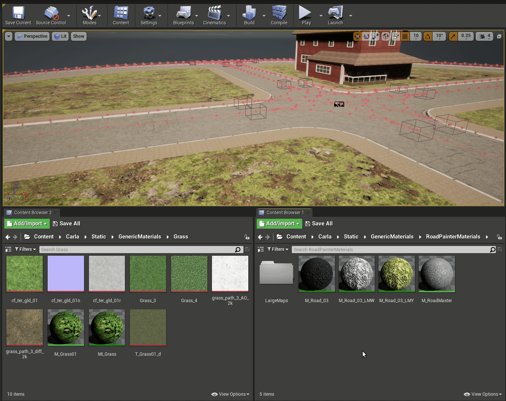
Road Painter
The road painter is a tool that can be used to customize the appearance of the road, adding extra realism with additional textures, decals and meshes.
What is the road painter?
The Road Painter tool is a blueprint that uses OpenDRIVE information to paint roads quickly. It takes a master material and applies it to a render target of the road to use as a canvas. The master material is made up of a collection of materials that can be blended using brushes and applied as masks. There is no need to apply photometry techniques nor consider the UVs of the geometry.
The road painter uses the OpenDRIVE information to paint the roads. Make sure that your .xodr file has the same name as your map for this to work correctly.
Establish the road painter, master material and render target
1. Create the RoadPainter actor.
- In the Content Browser, navigate to
Content > Carla > Blueprints > LevelDesign. - Drag the
RoadPainterinto the scene.
2. Create the Render Target.
- In the Content Browser, navigate to
Content > Carla > Blueprints > LevelDesign > RoadPainterAssets. - Right-click on the
RenderTargetfile and selectDuplicate. - Rename to
Tutorial_RenderTarget.
3. Create the master material instance.
- In the Content Browser, navigate to
Game > Carla > Static > GenericMaterials > RoadPainterMaterials. - Right-click on
M_RoadMasterand select Create Material Instance. - Rename to
Tutorial_RoadMaster.
4. Re-calibrate the Map Size (Cm) so that it is equal to the actual size of the map.
- Select the
RoadPainteractor in the scene. - Go to the Details panel and press the Z-Size button. You will see the value in Map Size (Cm) change.

5. Synchronize the map size between the RoadPainter and Tutorial_RoadMaster.
- In the Content Browser, open
Tutorial_RoadMaster. - Copy the value Map Size (Cm) from the previous step and paste it to Global Scalar Parameter Values -> Map units (CM) in the
Tutorial_RoadMasterwindow. - Press save.

6. Create the communication link between the road painter and the master material.
The Tutorial_RenderTarget will be the communication link between the road painter and Tutorial_RoadMaster.
- In the
Tutorial_RoadMasterwindow, apply theTutorial_RenderTargetto Global Texture Parameter Values -> Texture Mask. - Save and close.
- In the main editor window, select the road painter actor, go to the Details panel and apply the
Tutorial_RenderTargetto Paint -> Render Target.
Prepare the master material
The Tutorial_RoadMaster material you created holds the base material, extra material information, and parameters that will be applied via your Tutorial_RenderTarget. You can configure one base material and up to three additional materials.

To configure the materials, double-click the Tutorial_RoadMaster file. In the window that appears, you can select and adjust the following values for each material according to your needs:
- Brightness
- Hue
- Saturation
- AO Intensity
- NormalMap Intensity
- Roughness Contrast
- Roughness Intensity
You can change the textures for each material by selecting the following values and searching for a texture in the search box:
- Diffuse
- Normal
- ORMH
Explore some of the CARLA textures available in Game > Carla > Static > GenericMaterials > Asphalt > Textures.
Paint the road
1. Create the link between the road painter and the roads.
- In the main editor window, search for
Road_Roadin the World Outliner search box. - Press
Ctrl + Ato select all the roads. - In the Details panel, go to the Materials section and apply
Tutorial_RoadMasterto Element 0, Element 1, Element 2, and Element 3.
2. Choose the material to customize.
Each of the materials we added to Tutorial_RoadMaster are applied to the roads separately and application is configured with the Brush tool. To apply and customize a material:
- Select the road painter actor
- In the Details panel, select the material to work with in the Mask Color dropdown menu.

3. Set the brush and stencil parameters.
There are a variety of stencils to choose from in GenericMaterials/RoadStencil/Alphas. The stencil is used to paint the road according to your needs and can be adjusted using the following values:
- Stencil size — Size of the brush.
- Brush strength — Roughness of the outline.
- Spacebeween Brushes — Distance between strokes.
- Max Jitter — Size variation of the brush between strokes.
- Stencil — The brush to use.
- Rotation — Rotation applied to the stroke.


4. Apply each material to the desired portions of the road.
Choose where to apply the selected material via the buttons in the Default section of the Details panel:
- Paint all roads — Paint all the roads.
- Paint by actor — Paint a specific, selected actor.
- Paint over circle — Paint using a circular pattern, useful to provide variation.
- Paint over square — Paint using a square pattern, useful to provide variation.
This section also contains options to erase the applied changes.
- Clear all — Erase all the painted material.
- Clear materials — Remove the currently active materials.
- Clear material by actor — Remove the material closest to the selected actor.

5. Add decals and meshes.
You can explore the available decals and meshes in Content > Carla Static > Decals and Content > Carla > Static. Add them to road painter by extending and adding to the Decals Spawn and Meshes Spawn arrays. For each one you can configure the following parameters:
- Number of Decals/Meshes - The amount of each decal or mesh to paint.
- Decal/Mesh Scale — Scale of the decal/mesh per axis.
- Fixed Decal/Mesh Offset — Deviation from the center of the lane per axis.
- Random Offset — Max deviation from the center of the lane per axis.
- Decal/Mesh Random Yaw — Max random yaw rotation.
- Decal/Mesh Min Scale — Minimum random scale applied to the decal/mesh.
- Decal/Mesh Max Scale — Max random scale applied to the decal/mesh.

Once you have configured your meshes and decals, spawn them by pressing Spawn decals and Spawn meshes.
Note
Make sure that meshes and decals do not have collisions enabled that can interfere with cars on the road and lower any bounding boxes to the level of the road.
7. Experiment to get your desired appearance.
Experiment with different materials, textures, settings, decals, and meshes to get your desired look. Below are some example images of how the appearance of the road changes during the process of painting each material.


Update the appearance of lane markings
After you have painted the roads, you can update the appearance of the road markings by following these steps:
1. Make a copy of the master material.
- In the Content Browser, navigate to
Game > Carla > Static > GenericMaterials > RoadPainterMaterials. - Right-click on
Tutorial_RoadMasterand select Create Material Instance. - Rename to
Tutorial_LaneMarkings.
2. Configure the lane marking material.
- In the Content Browser, double-click on
Tutorial_LaneMarkings. - In the Details panel, go to the Global Static Switch Parameter Values section and check the boxes on the left and right of LaneMark.
- Go to the Texture section and check the boxes for LaneColor and Uv Size.
- Choose your preferred color for the lane markings in LaneColor.
- Save and close.
3. Select the road marking meshes.
Drag the material onto the lane markings you wish to color. Repeat the whole process for different colors of lane markings if required.
Trees and Vegetation
The CARLA content library has a comprehensive set of vegetation blueprints for you to add further realism to the off-road areas of your maps like sidewalks, parks, hillsides, fields and forrest.
Navigate to the vegetation folder in the CARLA content library: Carla > Static > Vegetation. You will find blueprints for multiple types of trees, bushes, shrubs. You can drag these elements into your map from the content browser.
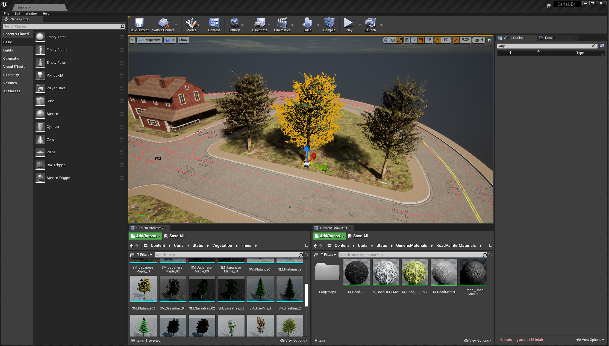
Foliage tool
A useful tool for trees and vegetation is the Unreal Engine foliage tool. Activate the tool by selecting the mode from the mode dropdown in the toolbar.
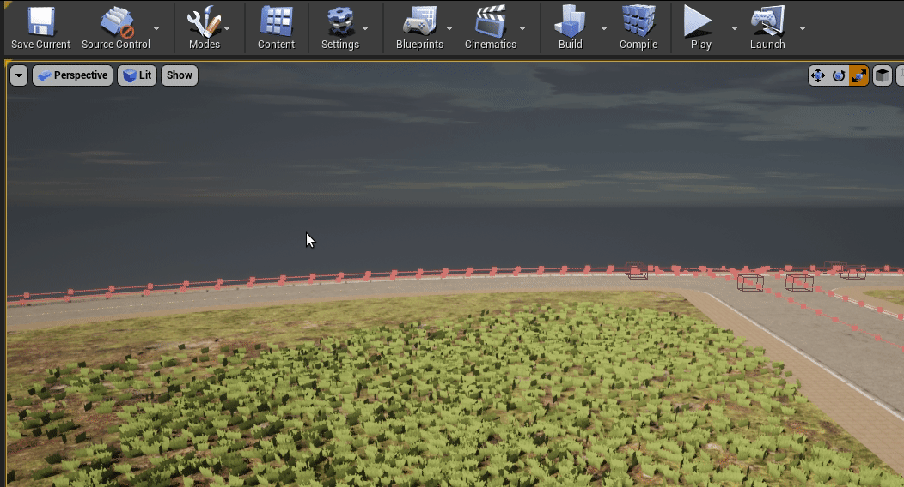
Drag your desired foliage item into the box labeled + Drop Foliage Here. Set an appropriate density in the density field, then paint into the map with your foliage item.

Exporting a map
Exporting a map as a separate package
To export a custom map as an independent content package, we use the make package command. Identify your custom map's location in the CARLA content directory through the Unreal content browser. We recommend creating your custom maps in with the existing CARLA maps in the Content > Carla > Maps directory. In this case, we are storing the map in its own folder named MyMap.
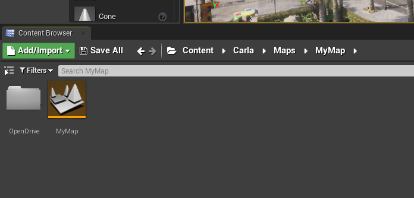
Remember that the map needs an associated OpenDRIVE file stored inside a directory named OpenDrive at the same level as the map asset (.umap file). The OpenDRIVE file should have the same name as the map itself with the .xodr extension. In this example I have named the map MyMap (the file will appear as MyMap.umap in a file browser), therefore my OpenDRIVE file is named MyMap.xodr.
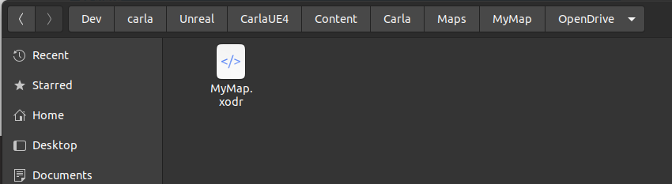
Now we need to create a package config JSON file for the export process. In a file browser (not the Unreal content browser) navigate to CARLA_ROOT/Unreal/CarlaUE4/Content/Carla/Config. Inside this directory, you will see a number of JSON config files. Open a new one with a name corresponding to your map and the suffix .Package.json. In this case we name the file exportMyMap.Package.json.
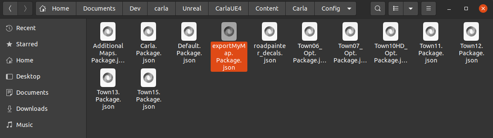
The JSON file should have the following structure:
{
"props": [],
"maps": [
{
"name": "MyMap",
"path": "/Game/Carla/Maps/MyMap",
"use_carla_materials": true
}
]
}
The name parameter should be the same as the name of your map asset file (without the .umap suffix). Ensure that the path parameter points to the correct directory location of your map asset (.umap file). The first part of the path CARLA_ROOT/Unreal/CarlaUE4/Content/ should be replaced with /Game/.
Now we call the make package command from a terminal in the CARLA_ROOT directory, with the following argument:
make package ARGS="--packages=exportMyMap"
The value of the argument --packages should match the name of the JSON configuration file without the .Package.json suffix. The package may take some time to build, depending on the size of the map.
When the export process is finished, the exported map package will be saved as a compressed archive:
- Linux:
.tar.gzarchive in theCARLA_ROOT/Distdirectory - Windows:
.ziparchive in theCARLA_ROOT/Build/UE4Carladirectory
The map package must be built using the target operating system. I.e. a map package built in Linux cannot be imported into a CARLA package for Windows.
To import the packaged map into a packaged version of CARLA, place the .tar.gz or .zip archive into the CARLA_ROOT/Import directory of an extracted CARLA package then run the ImportAssets.bin/.sh script. Once this is finished, launch CARLA and you will find the new custom map in the list of available maps.
Exporting a map as part of a complete CARLA package
To export the map as part of a complete CARLA package, such that the map is available on launch of the package, include the following line in the DefaultGame.ini file in CARLA_ROOT/Unreal/CarlaUE4/Config/:
+MapsToCook=(FilePath="/Game/Carla/Maps/MyMap/MyMap")
This line should be added in the [/Script/UnrealEd.ProjectPackagingSettings] section, preferably next to the other MapsToCook(...) entries. Then run make package command to build a package containing your map. The exported CARLA package with your map will be saved in the Dist folder on Linux and the /Build/UE4Carla/ folder on Windows.
Next steps
Continue customizing your map using the tools and guides below:
- Implement sub-levels in your map.
- Add buildings with the procedural building tool.
- Customize the weather
- Customize the landscape with serial meshes. Once you have finished with the customization, you can generate the pedestrian navigation information.
If you have any questions about the process, then you can ask in the forum.